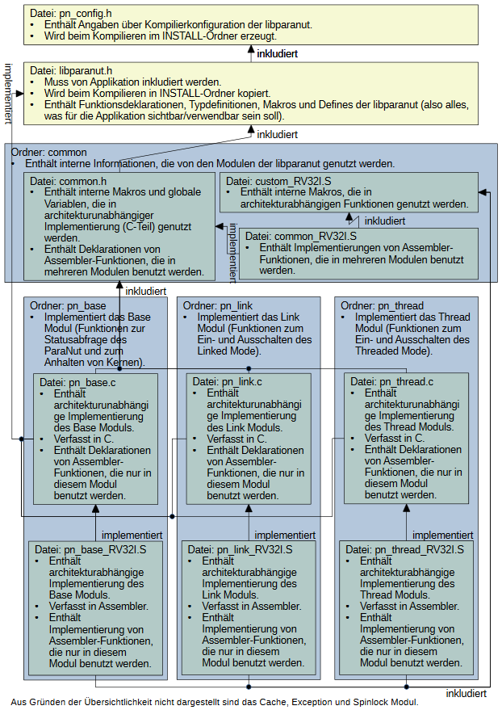

Software Library Documentation
Welcome to the libparanut documentation! This is a hardware abstraction library you can use to program a ParaNut processor without having to stare at Assembly Code. This documentation is meant as reference to developers interested in
- Developing software for a ParaNut processor.
- Using the special concepts of parallelity in a ParaNut processor.
- Improving the libparanut.
The main docoumentation containing the definition of the ParaNut architecture and design rules can be found in the ParaNut Manual. If you want to work with the SystemC ParaNut model (simulation) take a look at the libparanutsim documentation libparanutsim Documentation.
Modules of the libparanut
The libparanut serves several functions to you on a silver platter. These are grouped into the libparanut Modules :
- The Base Module contains functions for getting general information about the ParaNut, like the number of cores and such. There's also some functions for halting cores.
- The Link Module contains functions for stopping and starting Linked Mode execution. Don't know what that is? Check Modes or the fine ParaNut Manual.
- The Thread Module contains functions for stopping and starting Threaded Mode execution. Same advice goes.
- The Cache Module contains functions for controlling the ParaNut cache and getting information about it.
- The Exception Module contains functions for controlling Interrupts and Exceptions.
- The Spinlock Module is an implementation of a spinlock so you can properly protect and synchronize your stuff in Threaded Mode.
Overview
The following picture shows a system overview. It might be a little confusing at first. Don't worry about that, just read some more documentation and it will probably all fall into place.
- Todo:
- Add English Version and fix format

Overview of the libparanut
HOWTO
- Todo:
- Add documentation here in case other compilers/ISAs are used someday.
- Todo:
- The Makefile might not be compliant with any other tool than GNU make.
How to make libparanut run with our in-house ParaNut implementation: You will need GNU make and the RISC-V GNU Toolchain for that (see Appendix A in ParaNut Manual). Also, you may need to have Python on your system (so far, no restrictions on the version are known). This assumes you already got the ParaNut up and running!
- Open up the wonderful Makefile in the libparanut directory. This is the place where all your wishes come true. Right at the start, there's the section "System Configuration" where you can set a few things to tweek your libparanut. Check out the libparanut Compile Time Parameters to see what those values mean. The default should be fine at first.
- Onto the section "Compiler Configuration". See the "PN_ISA" in the Makefile? This is the Instruction Set Architecture. The very nice Makefile tree will chose all the right assembly source code files for the libparanut if this variable is set correctly. Currently, our ParaNut implements RISCV ISA, which is why this value says RV32I. This means you don't have to touch it.
- The Makefile also lets you chose the compiler. If you want another compiler than GCC, you will also need to add some if-else logic in the section "Compiler and Assembler Flags".
- To reduce the code size of the libparanut, you could set "PN_DEBUG" to 0. This means that the libparanut will not be compiled with debug symbols. It should be fine to compile it with debug symbols at first, though.
- Want everything compiled now? Say and the magic is done. All the modules are compiled and statically linked into "libparanut.a". You can find it in the newly generated directory named "INSTALL". Do not forget to call clean beforehand if you changed something in the Makefile.
- Include paranut.h in your application. Set your include-path to the INSTALL directory while compiling:
-I/path/to/libparanut/INSTALL/include
- Link libparanut.a into your application. To do that in GCC, you can just put
-L/path/to/libparanut/INSTALL/lib -lparanut
I hope the following example can explain what I mean:
- Todo:
- Prettier example, explain Link Module and Spinlock Module.
cd /path/to/libparanut
gmake all
cd /path/to/my_application.c
my_gcc -c my_compiler_options -I/path/to/libparanut/INSTALL/include my_application.c
my_gcc my_link_options my_object.o -L/path/to/libparanut/INSTALL/lib-lparanut
Do not forget to also compile in the startup code. To see a full example of what you need to do, check the Makefiles in the other sw/ subdirectories in the repository.
Expectations to the application
Here is a list of things that the libparanut expects you to have done before using it:
- The Cache Module expects you to have called pn_cache_init() before using any of its other functions. Behaviour of the other functions is undefined if not.
- The Exception Module expects you to have called pn_exception_init() before calling pn_exception_set_handler(). I mean, you can set your own exception handler beforehand, but it will not be called if the exception occurs. The pn_interrupt_enable(), pn_interrupt_disable(), and pn_progress_mepc() functions will work with no problem, though.
- The Thread Module is the complicated one. It's a little tricky because of its workflow. The CePU internally sets a few needed variables which indicate a status to the CoPU. After a CoPU is woken up, they start executing code at the reset address. This means that the end of the startup code for the CoPUs also needs to be their entrance point to the Thread Module, where they can read the internal variables and figure out what they are supposed to do with them. This entrance point is pn_thread_entry(), and it needs to be called in the startup code on all CoPUs. Our in-house startup code does this for you, but I'm leaving that here just in case you want to know.
- The Thread Module has one more expectation. The state of the CePU and its memory need to be shared with all cores. That means that there has to be a shared memory section that has to be as big as the memory for the individual cores. The start adress of this area has to be put into a globally known location called shared_mem_start, and the size has to be put into shared_mem_size. This also happens in our build-in startup code, so you do not need to worry about it.
Also, here's some general advice: If you want your startup code to be compatible with many versions of the libparanut, you can check if a certain module is available. The file pn_config.h, which is created during compilation time, has some defines set for every module that is enabled. Check out the pn_config.h documentation to find out more!
Future Ideas for libparanut
- In the Cache Module, split pn_cache_enable() and pn_cache_disable() into seperate functions for data and instruction cache.
- In the Thread Module, build in POSIX style thread functions.
- Build a state machine for every core that tracks wether a core is used in linked mode, threaded mode, or doing POSIX threads. Enable the user of the libparanut to use threaded and linked mode in a mixed way.
- In Exception Module, provide a function to hang in a "raw" exception handler (basically change mtvec).
- Implement a possibility to check wether or not a module has been initialized already. Also implement a pn_init() function which checks for all modules if the module is already initialized, and if it is not, initializes them (provided the module was compiled in).
- Concerning the init() functions: If a function in a module is used despite of the module not being initialized, throw an exception (use pn_ecall()).
- Implement a pn_strerror() function which takes an error value and prints what the error means.
- Implement a global checkable error variable.
- For threaded and linked mode, implement the possibility to pass a stack size that shall be copied. It should also be able to tell these functions that only the stack from the top function shall be copied.
- Implement a pn_atomic_increment() and pn_atomic_decrement() function.
- Implement pn_printf() which can be used in linked mode.
- In the Makefile, copy the libparanut to the place where the RISCV toolchain is installed. This would make it easier for applications to compile.
Copyright
Copyright 2019-2020 Anna Pfuetzner (annak.nosp@m.erst.nosp@m.in.pf.nosp@m.uetz.nosp@m.ner@g.nosp@m.mail.nosp@m..com) Alexander Bahle (alexa.nosp@m.nder.nosp@m..bahl.nosp@m.e@hs.nosp@m.-augs.nosp@m.burg.nosp@m..de)
Redistribution and use in source and binary forms, with or without modification, are permitted provided that the following conditions are met:
- Redistributions of source code must retain the above copyright notice, this list of conditions and the following disclaimer.
- Redistributions in binary form must reproduce the above copyright notice, this list of conditions and the following disclaimer in the documentation and/or other materials provided with the distribution.
THIS SOFTWARE IS PROVIDED BY THE COPYRIGHT HOLDERS AND CONTRIBUTORS "AS IS" AND ANY EXPRESS OR IMPLIED WARRANTIES, INCLUDING, BUT NOT LIMITED TO, THE IMPLIED WARRANTIES OF MERCHANTABILITY AND FITNESS FOR A PARTICULAR PURPOSE ARE DISCLAIMED. IN NO EVENT SHALL THE COPYRIGHT HOLDER OR CONTRIBUTORS BE LIABLE FOR ANY DIRECT, INDIRECT, INCIDENTAL, SPECIAL, EXEMPLARY, OR CONSEQUENTIAL DAMAGES (INCLUDING, BUT NOT LIMITED TO, PROCUREMENT OF SUBSTITUTE GOODS OR SERVICES; LOSS OF USE, DATA, OR PROFITS; OR BUSINESS INTERRUPTION) HOWEVER CAUSED AND ON ANY THEORY OF LIABILITY, WHETHER IN CONTRACT, STRICT LIABILITY, OR TORT (INCLUDING NEGLIGENCE OR OTHERWISE) ARISING IN ANY WAY OUT OF THE USE OF THIS SOFTWARE, EVEN IF ADVISED OF THE POSSIBILITY OF SUCH DAMAGE.